6. Home Inbox + Work — Inbox shows 2 new messages (ServiQ Test Provider, unread badge 2); Work shows My needs 2 / My work 0 with View all.
Device: emulator-5554 (Android API 37), debug build from the current working tree, dev Supabase 54.253.40.174:8000. Test account: navreview@serviqapp.com (seeded with 2 needs + 1 conversation / 2 unread messages).
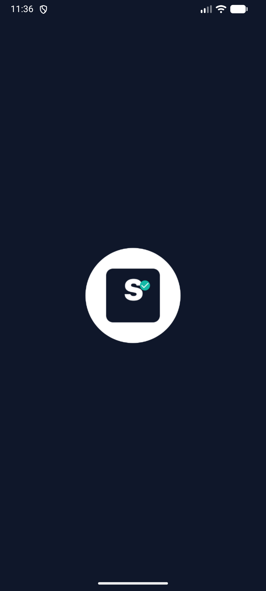
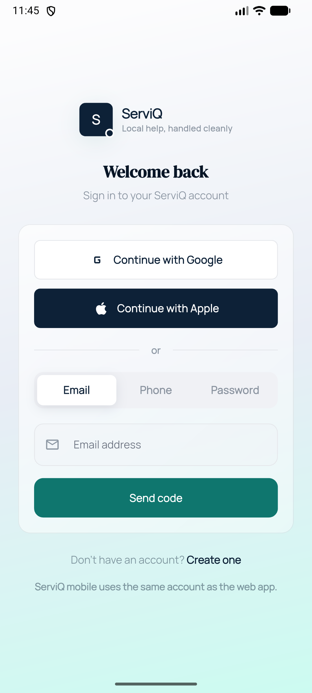
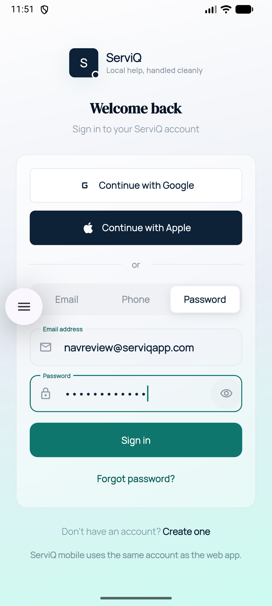
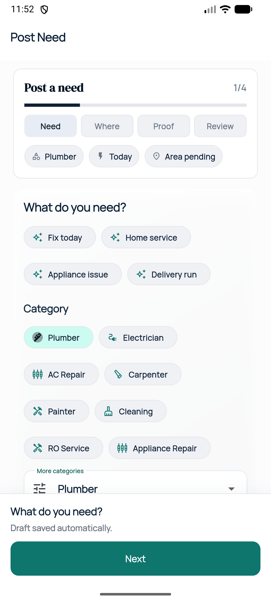
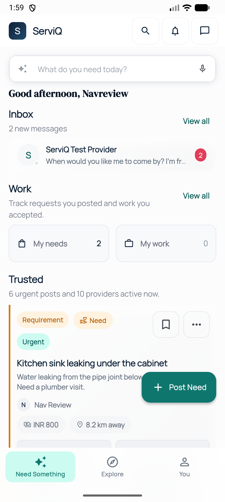
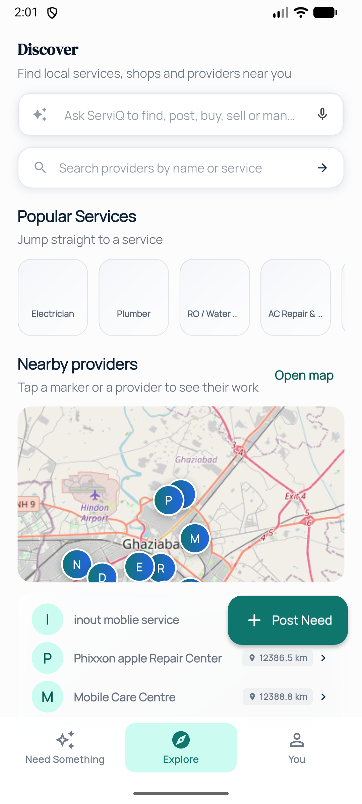
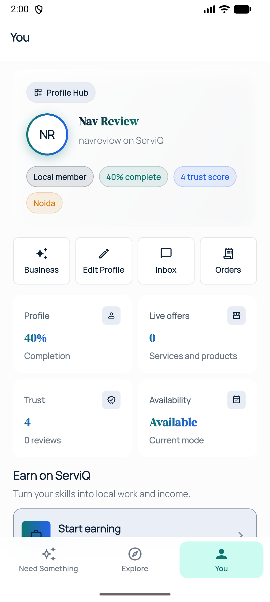
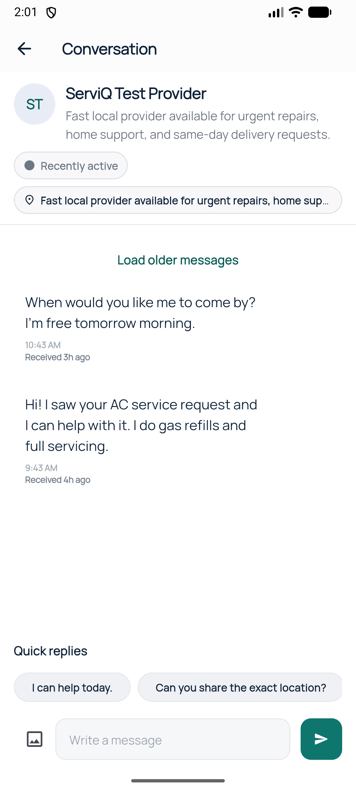
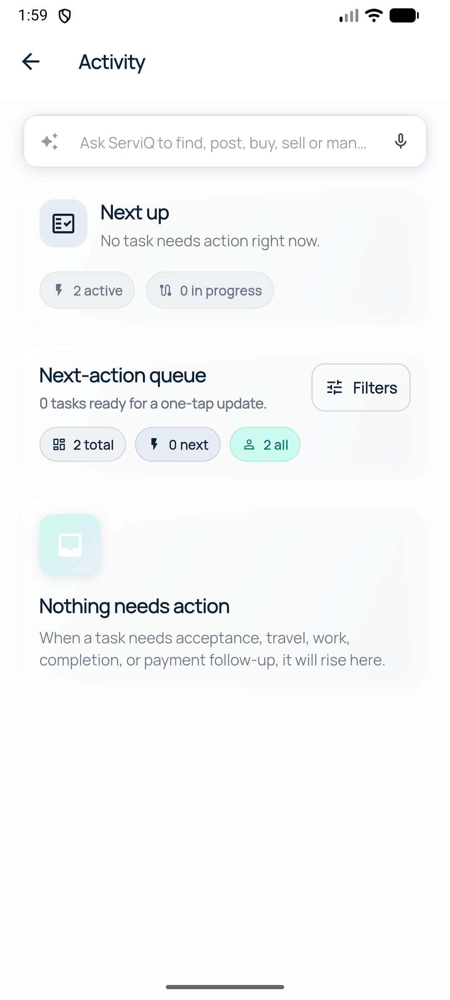
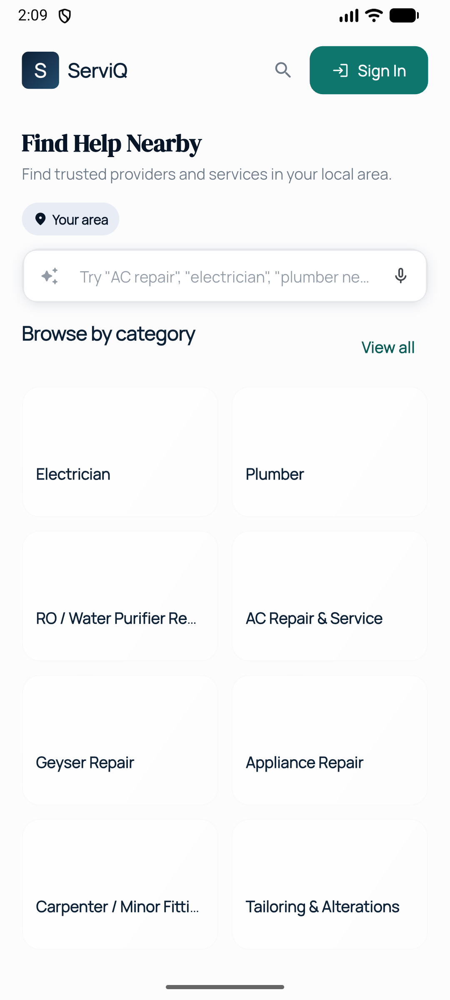
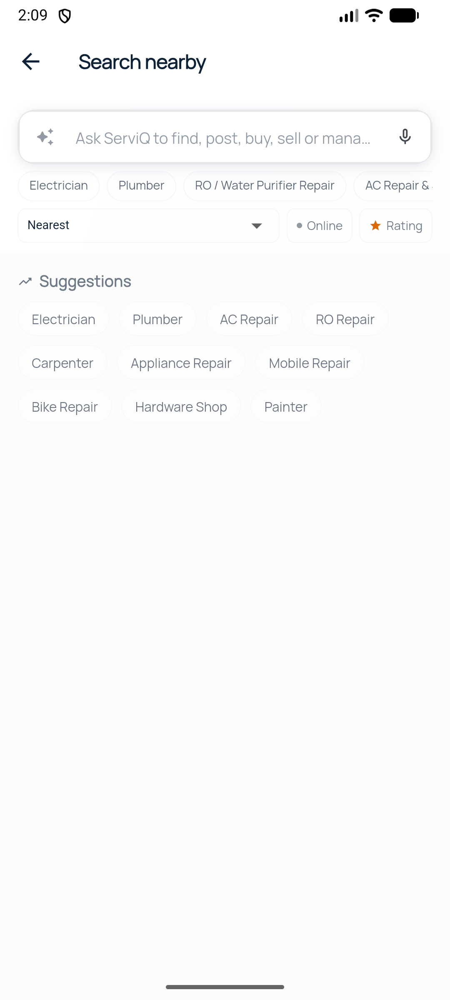
context.go(/app/discovery). Anonymous users land on Sign In (by design).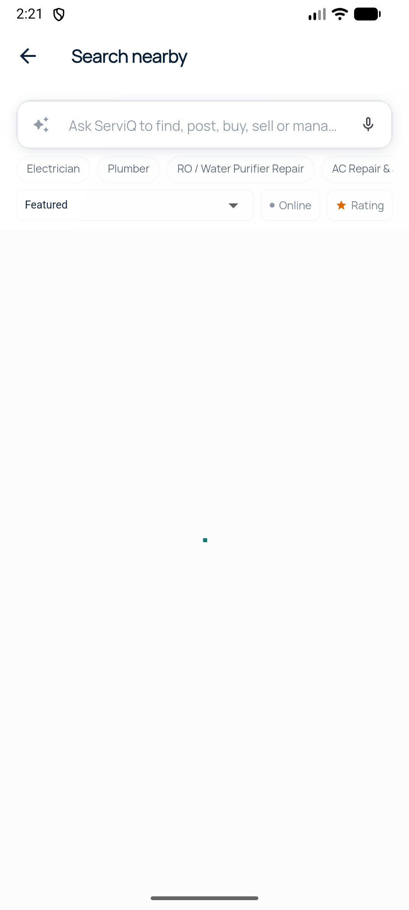
Verified on-device: all three tabs (Need Something / Explore / You) render and switch; pushed full pages (conversation thread, tasks) show a working back button and hide the bottom nav; the Work "View all" now lands on an Activity page (Next up / Next-action queue) rather than a plain tasks list.
Part 2: the public browse route is reachable from two anonymous entries — header search icon (/browse?browse=0, Suggestions state) and Featured → "Browse all" (/browse, all 315 providers, Featured sort). Auth-gated discovery entries ("Browse by category → View all", Explore, zones) redirect anonymous users to Sign In.
Landing category cards are selection toggles, not navigation (from source, marketplace_landing_page.dart:292-294): tapping a category only toggles a local highlight; it does not navigate. Navigation to discovery goes through the section "View all" actions and hero Explore button. This differs from the Explore tab, where category chips open the category feed.
Dev-build cold-start ANR: a true cold start (after pm clear) shows a transient "ServiQ isn't responding" dialog on this emulator before the first frame (Supabase bootstrap to 54.253.40.174 can exceed the ANR window). Tapping "Wait" recovers to the landing. Worth checking against the release build.
Screenshot pipeline fix: earlier 05–10 captures were byte-identical (stale adb pull after screencap -d 0 failed against a multi-display device). Re-captured without -d 0; all 14 files now verified distinct by md5 and content-checked via UI dumps.
You tab transient error: one profile load failed earlier with 404 HTML for /api/mobile/account (the route exists in app/api/mobile/account and the dev server returns 401/JSON when hit directly). It resolved on retry — appears to have been a dev-server reload race, not a routing bug.